Sinopse: A amarga rivalidade entre Henry Ford II com Enzo Ferrari na década de 1960 resultou num dos períodos mais estonteantes de corridas de carros desportivos na história do automobilismo. Agora esta história épica, que foi o grande o destaque no Le Mans, é recontada num emocionante novo documentário.
Nate Adams
Adam Carolla
Nate Adams
Adam Carolla
Sinopse: Durante a década de 1960, a Ford resolve entrar no ramo das corridas automobilísticas de forma que a empresa ganhe o prestígio e o glamour da concorrente Ferrari, campeoníssima em várias corridas. Para tanto, contrata o ex-piloto Carroll Shelby (Matt Damon) para chefiar a empreitada. Por mais que tenha carta branca para montar sua equipe, incluindo o piloto e engenheiro Ken Miles (Christian Bale), Shelby enfrenta problemas com a diretoria da Ford, especialmente pela mentalidade mais voltada para os negócios e a imagem da empresa do que propriamente em relação ao aspecto esportivo.
James Mangold
A.J Baime & Jez Butterworth
Sinopse: Fórmula 1: Dirigir Para Viver (Fórmula 1: A Emoção de um Grande Prémio em PT) é uma Série de Documentários produzida em colaboração entre a Netflix e a Fórmula 1 para dar uma visão exclusiva dos bastidores do Campeonato Mundial de Fórmula 1 de 2018. A série de documentários tem 10 partes é a "primeira a realmente imergir o público dentro dos cockpits, o paddock e as vidas dos principais pilotos e chefes de equipe da Fórmula 1 ". A série abrange o Campeonato Mundial de Fórmula 1 de 2018 e tem "acesso incomparável e exclusivo aos pilotos mais rápidos do mundo, diretores de equipe e proprietários, bem como à própria equipe de gerenciamento da Fórmula 1 (Federação Internacional do Automóvel)
Sophie Todd
Martin Webb,
Will Buxton,
Valtteri Bottas,
Alexander Albon,
Cyril Abiteboul,
Onur Han Besen,
Gizem Besen,
Nick Hardie,
James Routh,
Nonuk Walter,
Nick Hardie
Nada Encontrado.
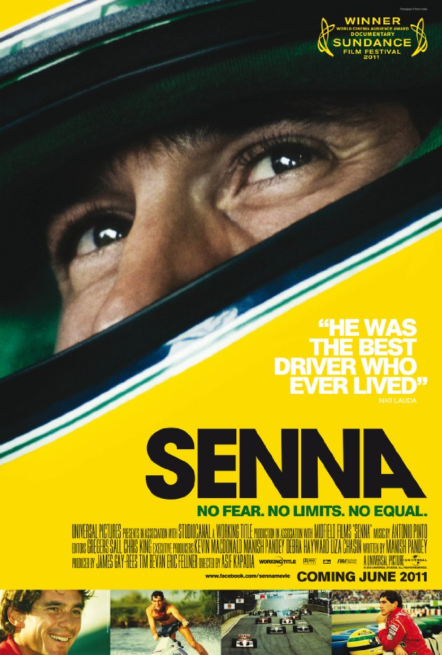 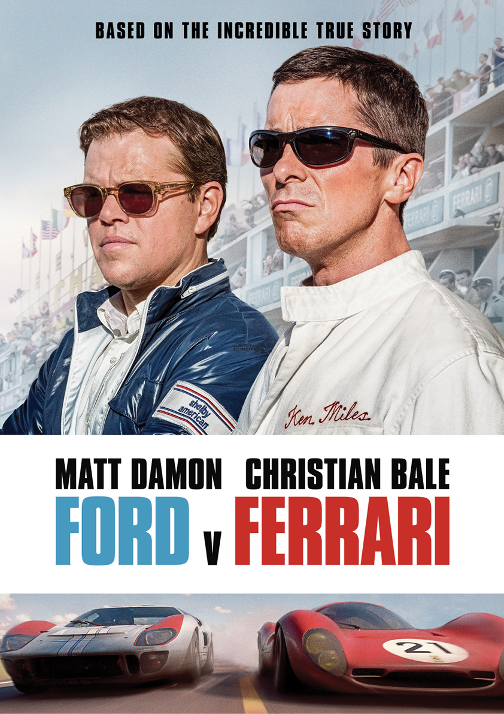 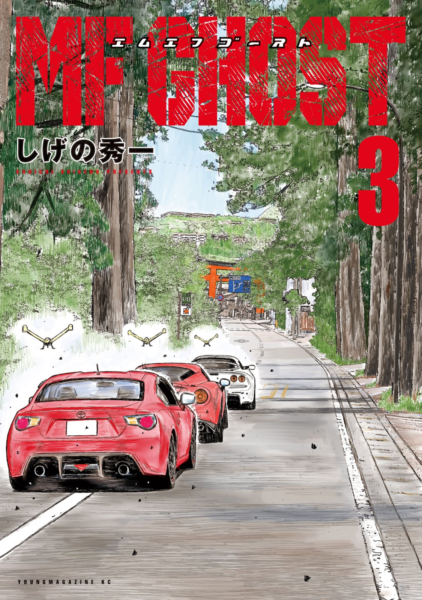 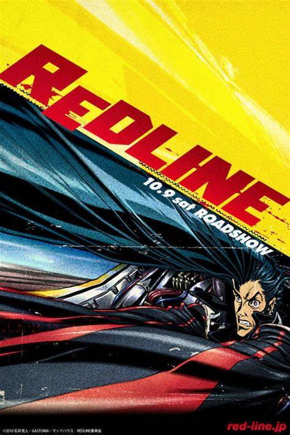 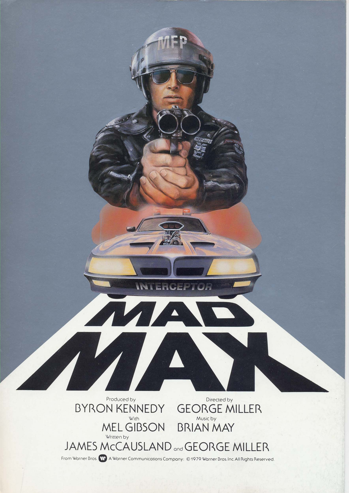 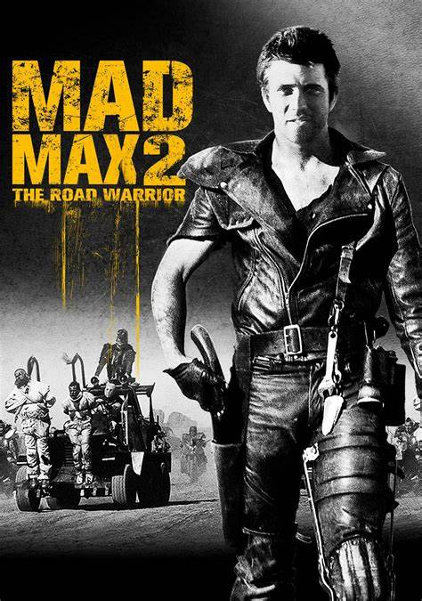 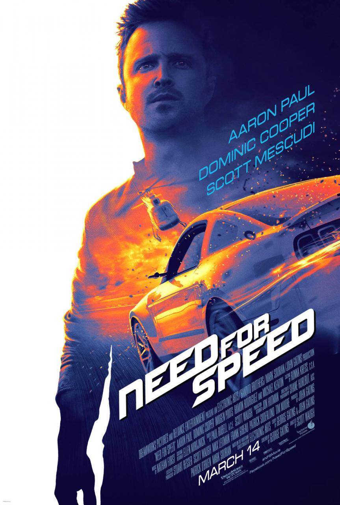 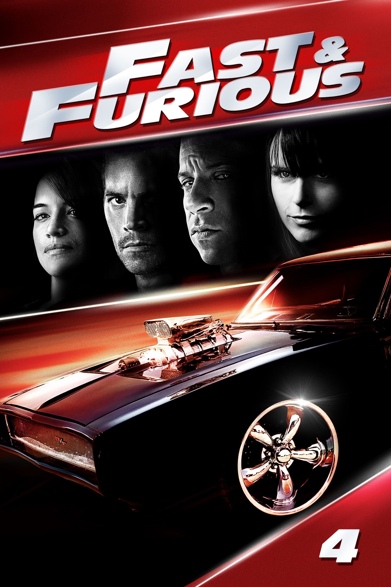 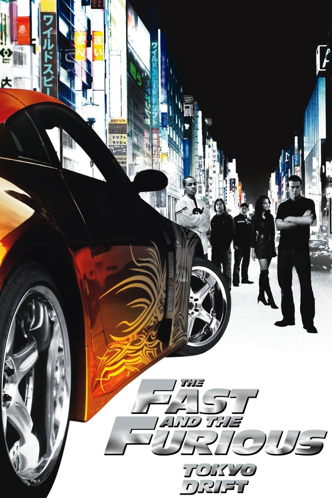 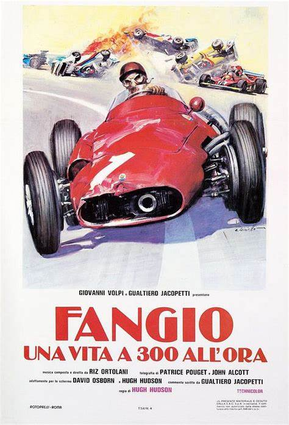 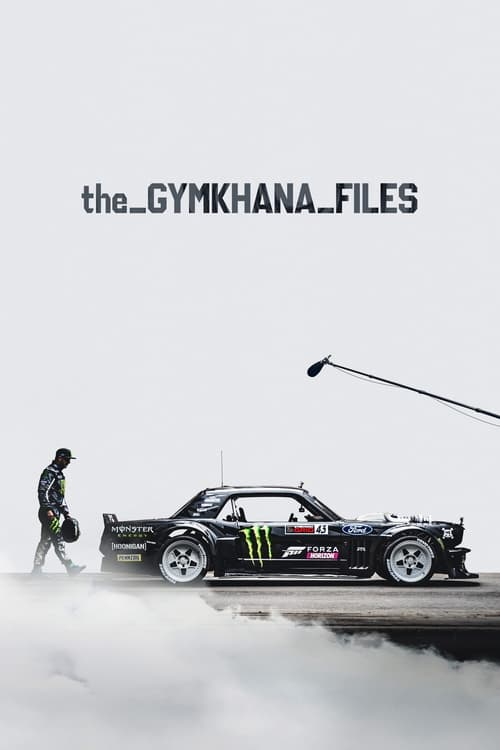 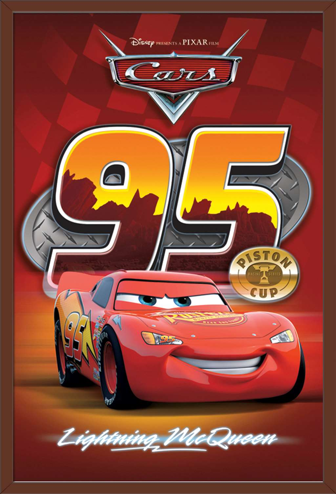
O novo filme do Batman definitivamente deveria estar aqui só por conta do novo carro. Simplesmente animal!!
Não tenho muita confiança no MF Ghost. Me pareceu muito fraco quando comparado com Initial D clássico. Ainda assim, como fã de longa data, vou assistir.
Alguem consegue me dizer qual o carro do Max de...bom, Mad Max? O contexto apocalíptico fez o carro ficar tao customizado que não consegui identificar. Vlw.
O famoso Honda NSX possui diferentes nomes. Por exemplo, se for comprar uma dessas belezinhas numa concessionária dos EUA, vai ter que procurar pelo nome "Acura NSX", mas se for comprar no boca a boca, pode caçar a "Ferrari Japonesa". No Brasil, porém, o carro possui um nome um pouco mais interessante: "Carro de Senna".
Não precisa ser professor de história para adivinhar daonde vem esse nome. Aryton Senna foi um dos pouquíssimos brasileiros a pegar no volante do superesportivo da Honda. Junto ao piloto Japonês Satoro Nakajima, Senna fez um test-drive no carro na pista de Suzuka, onde aconselhou a equipe de produção a tornar o carro mais rígido.

Por que carros de pretos ou de cores escuras tendem a degradar mais rapidamente que carros de outras pinturas? Vamos descobrir!
Ajuda PretoConfira os modelos mais cobiçados entre os colecionadores. Indo desde o clássico Fusca a carros com meras dezenas de unidades esplahadas pelo mundo
Curiosidade RarosFinalmente chegou! Venha conferir quanto está valendo seu carro na garagem ou o carro que quer colocar nela.
FIPE EconomiaEste site foi criado para todos os amantes de corrida que desejam ter acesso rápido e fácil aos melhores filmes e documentários, abrangendo desde filmes de animações a documentários sérios sobre o mundo automobilístico. Não se esqueça de checar nossas redes sociais para participar de enquentes e concorrer a miniaturas colecionáveis, além de ter contato com outros amantes de motores